More Derivatives¶
This chapter contains derivative stuff that most people probably find boring, but you might like some of it. It assumes that you have read the first derivative chapter.
Which functions have derivatives?¶
In the first derivative chapter I said that most functions you'll come across have a derivative. Let's be a bit more specific. The derivative doesn't exist in these cases:
-
The function is not continuous; that is, the graph consists of multiple lines. For example, this function is not continuous at
 and thus
and thus
 is not defined:
is not defined:
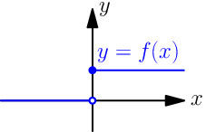
-
The graph of the function has a spike in it. Derivatives describe "growing speed" and it isn't clear how fast the values grow on top of a spike. For example, the absolute value
 has a derivative everywhere except at .
has a derivative everywhere except at .
Of course, there are more precise definitions about continuity and "spikes", but this should be enough to give you some kind of idea about the limitations.
The existence of this limit implies all these things:
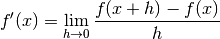
For example (here 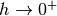 means that  approaches 0 from the positive
direction, or from right in a graph):
approaches 0 from the positive
direction, or from right in a graph):
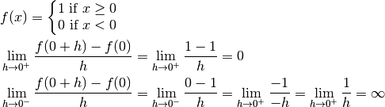
0 and  are very different, so the limit just doesn't exist. Similarly
we'd get and
are very different, so the limit just doesn't exist. Similarly
we'd get and  if we tried to evaluate 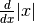 at .
if we tried to evaluate 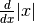 at .
Chain Rule¶
Let's say you want to find the derivative of  . The derivative of
. The derivative of  is just
is just  , so isn't the derivative of then 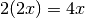?
No, it's not!
, so isn't the derivative of then 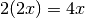?
No, it's not!
When things are nested like this you need to multiply by the derivative of the inner stuff.
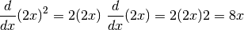
This is known as the chain rule, and it looks like this in a general  and
and  form:
form:
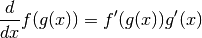
There's a proof below.
Derivative Rules¶
Libraries like sympy are sure handy for finding derivatives, but we can also
find the derivative of pretty much anything by hand. In the first derivative
chapter we learned to find the derivatives of  ,
,  and
. And if and are functions that have a derivative, we know what the
derivative of
and
. And if and are functions that have a derivative, we know what the
derivative of  or 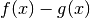 is.
or 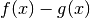 is.
We can do a lot more, and there's a concise list of derivative rules on the summary page. Most of the rules are proved here, and they are ordered so that they don't use anything that has not been proved before them.
 ¶
¶
This is messy, but it works.
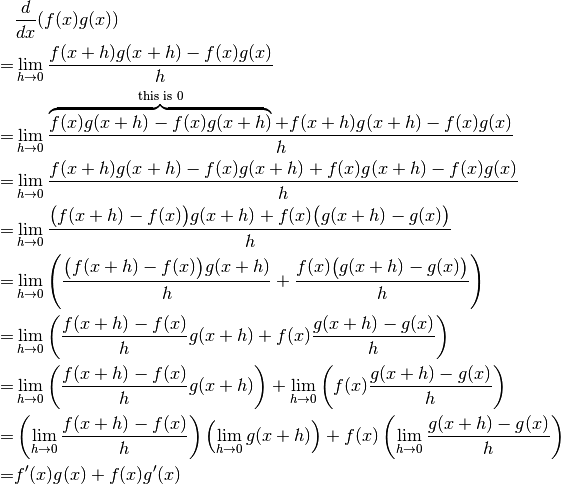
 ¶
¶
It's easy to prove that this works for an individual value. For example,
our very first derivative example shows that  . Here
I'll prove that this works with all positive integers using a powerful
technique known as induction.
. Here
I'll prove that this works with all positive integers using a powerful
technique known as induction.
Let's start by showing that this works with  :
:

Next we'll prove that if the rule works at  then it also works
at
then it also works
at  where
where  is a positive integer. Let's write things down just to
be clear:
is a positive integer. Let's write things down just to
be clear:
We assume: 
We'll prove: 
Let's use the  and
and  rules we
proved above and the assumption.
rules we
proved above and the assumption.

We proved that if then
. Now we know that the rule works
when , and then if we plug in  we know it works when
we know it works when  , and so
on.
, and so
on.

Note that we only proved that the rule works when is a positive integer,
but it also works when is e.g.  . It's possible to prove
that the rule isn't limited to positive integers, but that's beyond the
scope of this tutorial.
. It's possible to prove
that the rule isn't limited to positive integers, but that's beyond the
scope of this tutorial.
Handy thing: 
Proof:

In this case we need to plug in  and
and  .
.
 ¶
¶
We could prove this with the  rule because
rule because
 , but we proved the
, but we proved the  rule only for positive
integers. Let's survive without it.
rule only for positive
integers. Let's survive without it.
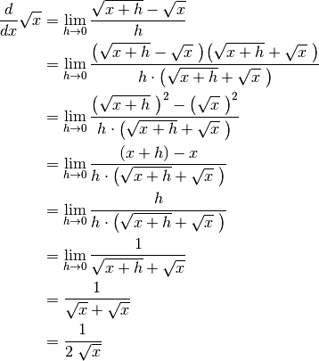
 ¶
¶
We could use the rule again because  is actually
is actually
 , but as before, we haven't proved that it works at
, but as before, we haven't proved that it works at  so we'll
do this without it.
so we'll
do this without it.

 ¶
¶
This rule looks simple, but it's surprisingly difficult to prove correctly while keeping it easy to read. Here's the best proof I managed to make.
Let's start by plugging stuff into the definition of derivative:


Note that I used with one limit and with the other; the limits are
completely independent of each other and I wanted to make it stand out. In
other words, it doesn't matter how and relate to each other as long
as both of them approach 0.
The rule can be used only if  exists, and thus must be
continuous; see the derivative existence stuff
above. So, if
exists, and thus must be
continuous; see the derivative existence stuff
above. So, if  (read: h
approaches 0) then
(read: h
approaches 0) then  and
and  .
.
If we put all this together we can set  . Now it's time to
calculate
. Now it's time to
calculate  .
.
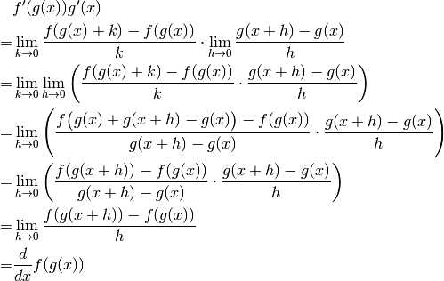
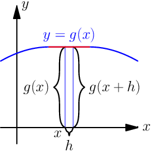This looks nice, but we are not done yet! We divided by . What if
 when but
when but  ? Practically it means that
the graph
? Practically it means that
the graph  is a horizontal and straight line around because
is a horizontal and straight line around because
 with a small . So, we can say that
with a small . So, we can say that  on this
interval ( is a constant) and prove this case separately:
on this
interval ( is a constant) and prove this case separately:


Look carefully:  because we differenciated
because we differenciated  with respect to , so was actually yet another constant because it
doesn't depend on the value of .
with respect to , so was actually yet another constant because it
doesn't depend on the value of .
 ¶
¶
We need these rules that are proved above:

Now this is quite straight-forward.
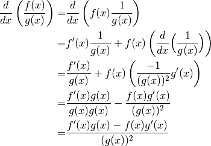